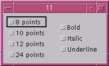

Java の GUI プログラミングではコンポーネントを配置するために多くのコードを書かなければなりません。コンポーネントの配置は通常次のような手順で行います。
しかし、画面の部品を作成するコードとレイアウトのコードが分離していないため、プログラムが見難くなり、後でレイアウトだけ変更するのが難しくなりがちです。特にコンポーネントの包含関係が階層的である場合には、コードが読みにくくなります。
Panel panel1 = new Panel(); panel1.setLayout(LayoutManagerA); panel1.add(component1); ... Panel panel2 = new Panel(); ppanel2.setLayout(LayoutManagerB); panel2.add(component3); ... panel1.add(panel2); ... add(panel1);
階層的レイアウトは、配列を使って階層的な包含関係を直感的に表す方法です。
Object[] format = new Object[]{ LayoutManagerA.class, component1,
new Object[]{ LayoutManagerB.class, component2, ... }, ...
};
Layout.layout(container, format);
- public static Container layout(Container container, Object[] format)
- formatを使ってcontainerにコンポーネントを配置し、そのcontainerを返す。
配列の最初の要素がjava.awt.LayoutManagerクラスのサブクラスを表すClassオブジェクトの場合、 そのクラスに対して登録されているレイアウト規則を使って、配列の構造からレイアウトを作成します。
Layoutクラスには、次のレイアウトマネージャのマッピングがあらかじめ登録されています(後述)。
配列の最初の要素がClassオブジェクトでない場合、次の規則に従います。
Layout.layout(new JTabbedPane(), new Object[]{
new Object[]{new JLabel("One"), "One"},
new Object[]{new JLabel("Two"), "Two"}
});
Layout.layout(panel, new Object[]{
BorderLayout.class, new Object[]{new Integer(5), new Integer(5)},
new Object[]{ "Center", new Button("Center") },
new Object[]{ "South", new Button("South") },
new Object[]{ "North", new Button("North") }
});
配列の最初の要素がBorderLayout.class の場合、２番目の要素はBorderLayoutクラスのコンストラクタのパラメータを表す配列になります。残りの要素は、次のいずれかです。
Layout.layout(panel, new Object[]{
FlowLayout.class, new Object[]{},
new Button("One"),
new Button("Two"),
new Button("Three")
});
配列の最初の要素がFlowLayout.class の場合、２番目の要素はFlowLayoutクラスのコンストラクタのパラメータを表す配列になります。残りの要素は、次のいずれかです。
Layout.layout(panel, new Object[]{
GridLayout.class, new Object[]{},
new Button("One"),
new Button("Two"),
new Button("Three"),
new Button("Four")
});
配列の最初の要素がGridLayout.class の場合、２番目の要素はGridLayoutクラスのコンストラクタのパラメータを表す配列になります。残りの要素は、次のいずれかです。
Layout.layout(panel, new Object[]{
GridBagLayout.class,
new Object[]{"gridx=0, ...", new Button("One")},
new Object[]{"gridx=0, ...", new Button("Two")},
new Object[]{"gridx=0, ...", new Button("Three")},
new Object[]{"gridx=0, ...", new Button("Four")}
});
配列の最初の要素がGridBagLayout.class の場合、２番目の要素は次の2つの要素をもつ配列になります。
fill と anchor には、static 変数の名前を指定します。insets には 0:0:0:0 のように4つの整数をコロン(:)でつなげたものを指定します。
Layout.layout(panel, new Object[]{
CardLayout.class, new Object[]{},
new Object[]{"1", new Button("One")},
new Object[]{"2", new Button("Two")},
new Object[]{"3", new Button("Three")}
});
配列の最初の要素がCardLayout.class の場合、２番目の要素はCardLayoutクラスのコンストラクタのパラメータを表す配列になります。残りの要素は、次のいずれかです。
Layout.layout(panel, new Object[]{
PnutsLayout.class, "columns=2",
button1,
"label",
null,
new Object[]{
button2, "colspan=2, padding=10:0"
}
});
配列の最初の要素がPnutsLayout.class の場合、２番目の要素は PnutsLayoutクラスのコンストラクタのパラメータになります。残りの要素はコンテナに貼り付けるコンポーネントを一つ一つを表します。それらは、Component オブジェクトか、String オブジェクトか、Object の配列か、null のいずれかです。
したがって、前の例は次のように解釈されます。
setLayout(new PnutsLayout("columns=2"));
add(button1, "");
add(new Label("label"));
add(new Panel());
add(button2, "colspan=2, padding=10:0");
例:
|  |
Frame f = new Frame("11");
Layout.layout(f,
new Object[]{PnutsLayout.class, "columns=2,pading=5",
new Object[]{PnutsLayout.class, "halign=left",
new Checkbox("8 points"),
new Checkbox("10 points"),
new Checkbox("12 points"),
new Checkbox("24 points")},
new Object[]{PnutsLayout.class, "halign=left",
new Checkbox("Bold"),
new Checkbox("Italic"),
new Checkbox("Underline")}});
f.pack();
f.show();
|